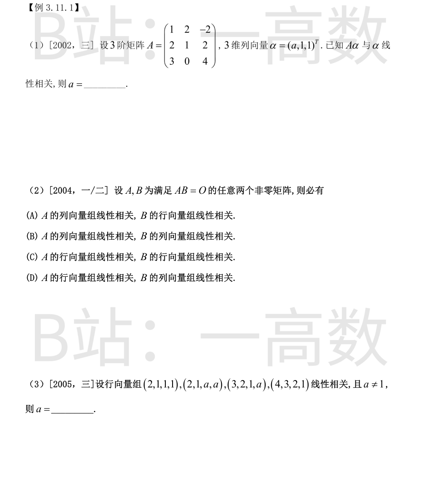
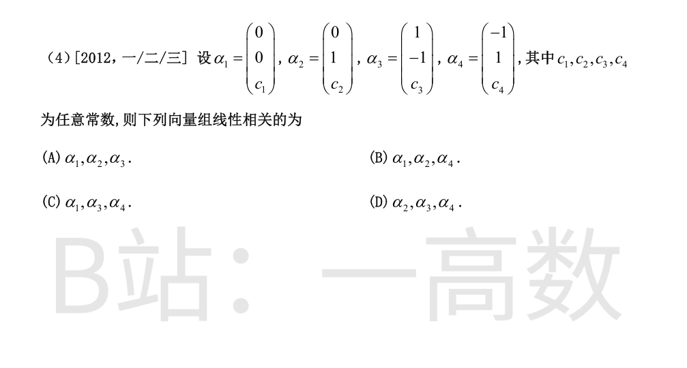
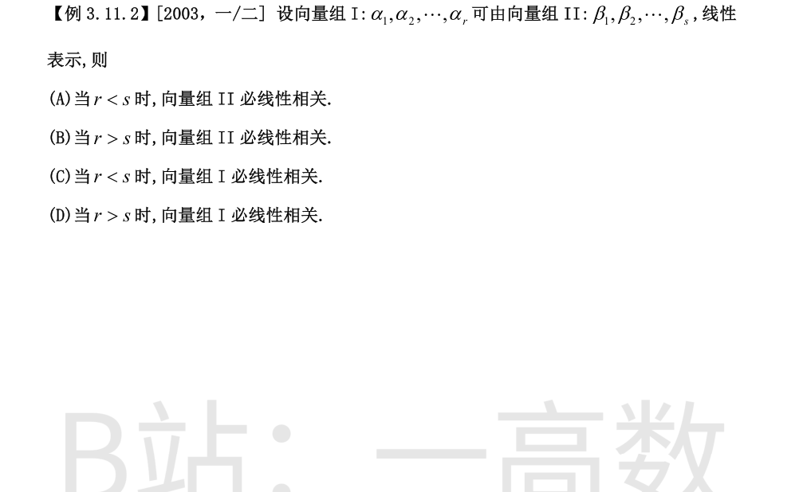
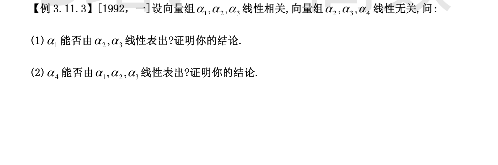
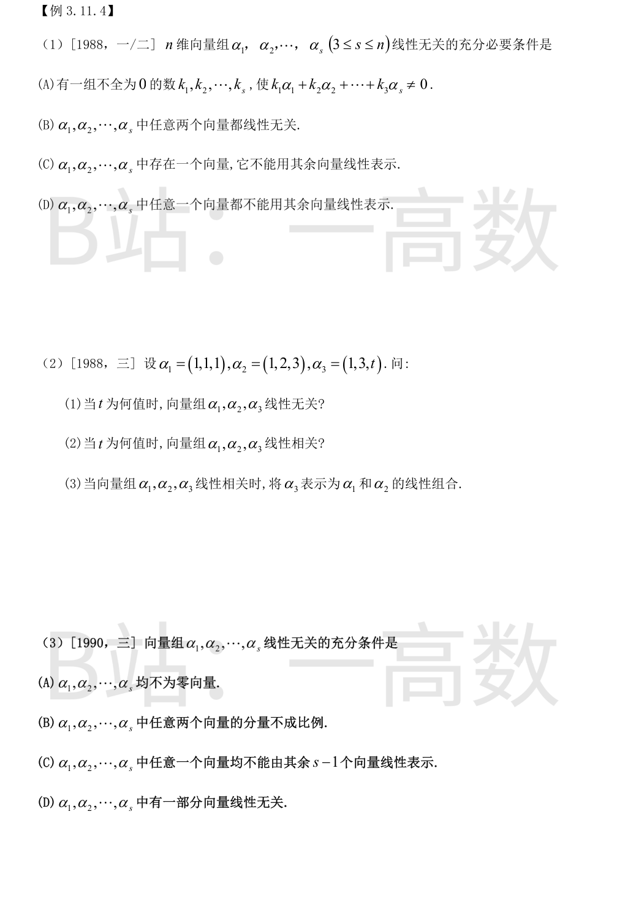
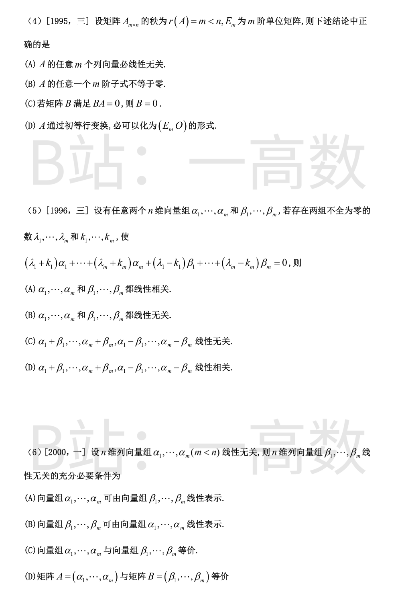
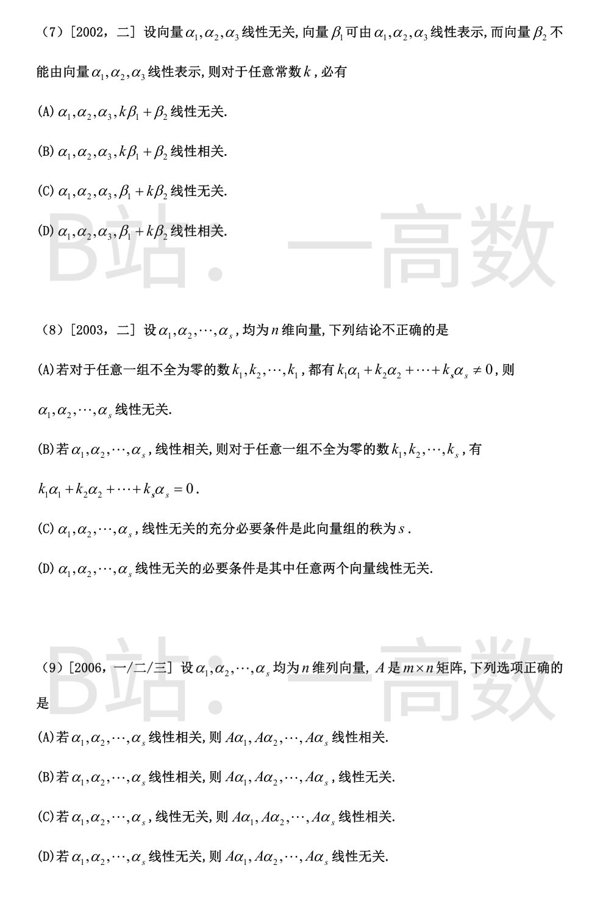
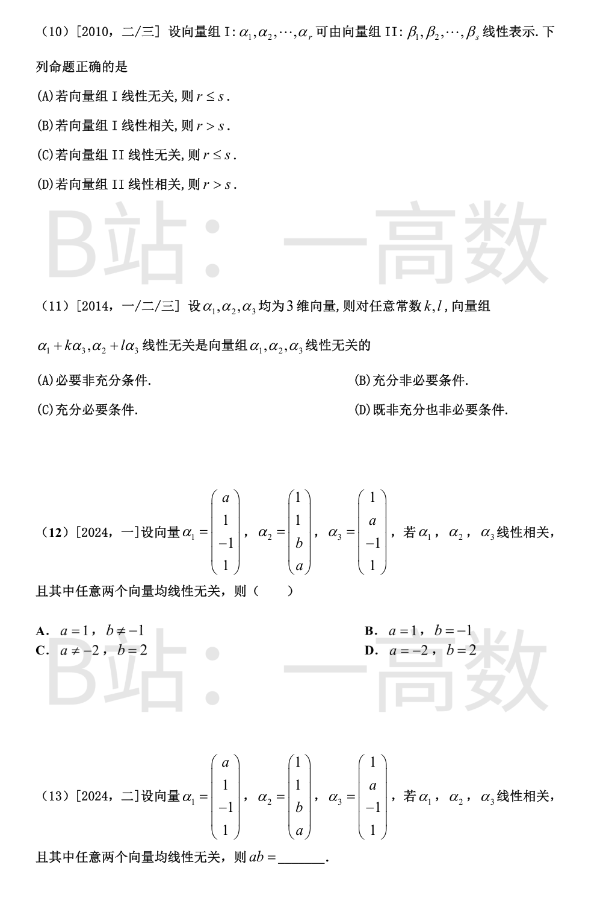
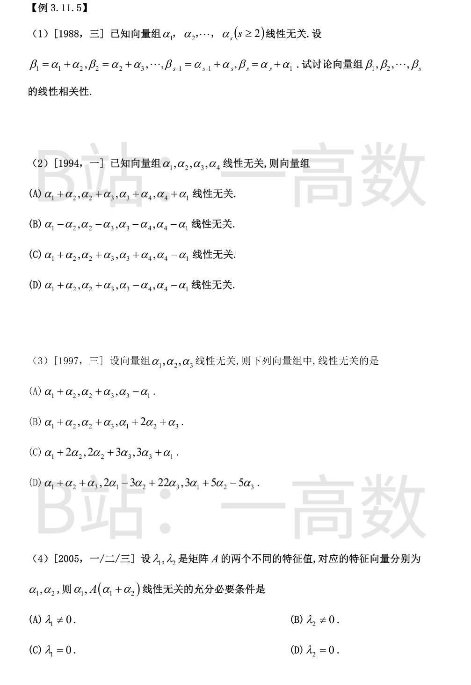
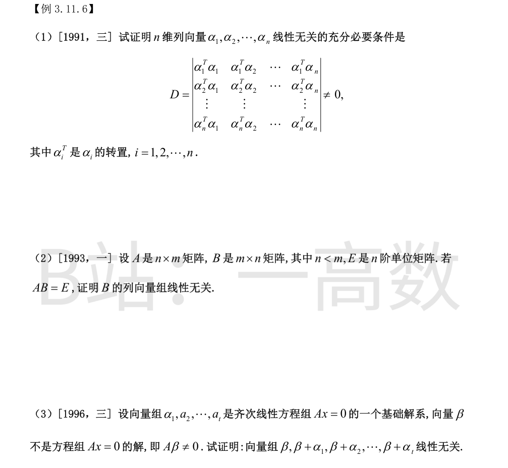

$A\alpha=\begin{pmatrix}1&2&-2\\ 2&1&2\\ 3&0&4\end{pmatrix}\begin{pmatrix}a\\ 1\\ 1\end{pmatrix}=\begin{pmatrix}a+2-2\\ 2a+1+2\\ 3a+0+4\end{pmatrix}=\begin{pmatrix}a\\ 2a+3\\ 3a+4\end{pmatrix}$
Aα 与 α 线性相关且 $\alpha\neq 0$，故存在数 $\lambda$ 使 $A\alpha=\lambda\alpha$，比较分量：
$$a=\lambda a,\qquad 2a+3=\lambda,\qquad 3a+4=\lambda$$
由后两式相减得 $a=-1$，此时 $\lambda=2(-1)+3=1$，第一式 $-1=1\times(-1)$ 亦成立。
故 $a=-1$。
设 $b$ 为 $B$ 的任一列，由 $AB=O$ 得 $Ab=O$。因 $B\neq O$，存在 $b\neq 0$ 使 $Ab=O$，即齐次方程组 $Ax=O$ 有非零解 $\iff$ $A$ 的列向量组线性相关。
又 $A\neq O$，将 $AB=O$ 转置得 $B^{T}A^{T}=O$，同理 $B^{T}$（非零）的列向量组线性相关，即 $B$ 的行向量组线性相关。
故对任意满足 $AB=O$ 的非零 $A,B$，必有 A 的列向量组线性相关、B 的行向量组线性相关，选 (A)。
4 个 4 维向量线性相关 $\iff$ 以其为行构成的行列式为零：
$$D=\begin{vmatrix}2&1&1&1\\ 2&1&a&a\\ 3&2&1&a\\ 4&3&2&1\end{vmatrix}\xrightarrow{\substack{r_2-r_1\\ r_3-\frac32 r_1\\ r_4-2r_1}} 2\begin{vmatrix}0&a-1&a-1\\ \frac12&-\frac12&a-\frac32\\ 1&0&-1\end{vmatrix}$$
按第 1 列展开：$D=2\Big[\tfrac{a-1}{2}+(a-1)^{2}\Big]=(a-1)(2a-1)$。
令 $D=0$ 得 $a=1$ 或 $a=\tfrac12$。由 $a\neq 1$，故 $a=\dfrac12$。
以各向量为列作 3 阶行列式，逐项检验：
(A) $|\alpha_1\,\alpha_2\,\alpha_3|=\begin{vmatrix}0&0&1\\ 0&1&-1\\ c_1&c_2&c_3\end{vmatrix}=-c_1$，仅当 $c_1=0$ 时才相关；
(B) $|\alpha_1\,\alpha_2\,\alpha_4|=\begin{vmatrix}0&0&-1\\ 0&1&1\\ c_1&c_2&c_4\end{vmatrix}=c_1$，同样不恒为零；
(D) $|\alpha_2\,\alpha_3\,\alpha_4|=\begin{vmatrix}0&1&-1\\ 1&-1&1\\ c_2&c_3&c_4\end{vmatrix}=-(c_3+c_4)$，不恒为零；
(C) $|\alpha_1\,\alpha_3\,\alpha_4|=\begin{vmatrix}0&1&-1\\ 0&-1&1\\ c_1&c_3&c_4\end{vmatrix}=c_1\begin{vmatrix}1&-1\\ -1&1\end{vmatrix}=c_1(1-1)=0$ 对任意常数恒成立。
故对任意常数 $c_1,c_2,c_3,c_4$，必线性相关的是 $\alpha_1,\alpha_3,\alpha_4$，选 (C)。

设两组的秩分别为 $r(\mathrm{I}),r(\mathrm{II})$。I 可由 II 线性表示 $\Rightarrow$ $r(\mathrm{I})\le r(\mathrm{II})\le s$。
当 $r>s$ 时，$r(\mathrm{I})\le s<r$，即向量组 I 的秩小于其向量个数，故 I 必线性相关，选 (D)。
(A)(B) 错：II 的相关性由其自身决定，与 I 能否被表示无关，$r$ 与 $s$ 的大小不制约 II；
(C) 错：$r<s$ 时 I 既可能无关（如 I 取 $s$ 维单位向量组中的 $r$ 个，$r<s$）也可能相关，不具必然性。

先注意：$\alpha_2,\alpha_3,\alpha_4$ 线性无关 $\Rightarrow$ 其任一部分组线性无关，故 $\alpha_2,\alpha_3$ 线性无关。
由 $\alpha_1,\alpha_2,\alpha_3$ 线性相关，存在不全为零的数 $x_1,x_2,x_3$ 使
$$x_1\alpha_1+x_2\alpha_2+x_3\alpha_3=0$$
若 $x_1=0$，则 $x_2\alpha_2+x_3\alpha_3=0$ 有非零解，与 $\alpha_2,\alpha_3$ 线性无关矛盾。故 $x_1\neq 0$，于是
$$\alpha_1=-\frac{x_2}{x_1}\alpha_2-\frac{x_3}{x_1}\alpha_3$$
即 $\alpha_1$ 能由 $\alpha_2,\alpha_3$ 线性表出；又 $\alpha_2,\alpha_3$ 无关，表示式唯一。
反证法。假设 $\alpha_4=c_1\alpha_1+c_2\alpha_2+c_3\alpha_3$。由 (1) 知 $\alpha_1=d_2\alpha_2+d_3\alpha_3$，代入得
$$\alpha_4=c_1(d_2\alpha_2+d_3\alpha_3)+c_2\alpha_2+c_3\alpha_3=(c_1d_2+c_2)\alpha_2+(c_1d_3+c_3)\alpha_3$$
即 $\alpha_4$ 可由 $\alpha_2,\alpha_3$ 线性表示，从而 $\alpha_2,\alpha_3,\alpha_4$ 线性相关，与已知矛盾。
故 $\alpha_4$ 不能由 $\alpha_1,\alpha_2,\alpha_3$ 线性表出。




线性无关的等价刻画：向量组线性无关 $\iff$ 其中任一向量都不能由其余 $s-1$ 个向量线性表示，选 (D)。
(A) 是必要条件但不充分：如 $\alpha_1=(1,0),\alpha_2=(2,0)$ 线性相关，取 $k=(1,0)$ 仍有 $k_1\alpha_1+k_2\alpha_2\neq0$；
(B) 是必要条件但不充分：如 $(1,0),(0,1),(1,1)$ 两两无关但整体相关；
(C) 是必要条件但不充分：如 $(1,0),(2,0),(0,1)$ 中 $(0,1)$ 不能由其余表示，但 $(1,0),(2,0)$ 成比例，整体线性相关。
$$D=\begin{vmatrix}1&1&1\\ 1&2&3\\ 1&3&t\end{vmatrix}=1\cdot(2t-9)-1\cdot(t-3)+1\cdot(3-2)=t-5$$
(1) $t\neq5$ 时 $D\neq0$，向量组线性无关；(2) $t=5$ 时 $D=0$，向量组线性相关。
(3) $t=5$ 时 $\alpha_3=(1,3,5)$，设 $\alpha_3=x_1\alpha_1+x_2\alpha_2$：
$$x_1+x_2=1,\quad x_1+2x_2=3,\quad x_1+3x_2=5$$
前两式相减得 $x_2=2$，$x_1=-1$，验证第三式 $-1+6=5$ 成立。故 $\alpha_3=-\alpha_1+2\alpha_2$。
(C) 与线性无关互为充要条件，当然是充分条件，选 (C)。
(A) 不充分：如 $(1,0),(2,0)$ 均非零但相关；
(B) 不充分：如 $(1,0),(0,1),(1,1)$ 两两分量不成比例但整体相关；
(D) 不充分：部分无关推不出整体无关，如 $(1,0),(0,1),(1,1)$ 有一部分 $(1,0),(0,1)$ 无关，但整体相关。
(C) 正确。设 $B$ 有 $m$ 列，$BA=O$ 转置得 $A^{T}B^{T}=O$，即 $B^{T}$ 的每一列（$B$ 的每一行）都是 $A^{T}x=0$ 的解。而 $r(A^{T})=m$ 等于 $A^{T}$ 的列数 $m$，故 $A^{T}x=0$ 只有零解，$B^{T}=0$，即 $B=0$。
(A) 错：只能保证存在 $m$ 个列向量线性无关，不是任意 $m$ 个；
(B) 错：只能保证存在一个 $m$ 阶子式非零，不是任意一个；
(D) 错：初等行变换只能将其化为行最简形 $\left(E_m\ \ F\right)$，$F$ 未必为 $O$；化成 $\left(E_m\ \ O\right)$ 一般还需列变换。选 (C)。
将条件改写（按 $\lambda_i$、$k_i$ 归并）：
$$\lambda_1(\alpha_1+\beta_1)+\cdots+\lambda_m(\alpha_m+\beta_m)+k_1(\alpha_1-\beta_1)+\cdots+k_m(\alpha_m-\beta_m)=0$$
系数 $\lambda_1,\dots,\lambda_m,k_1,\dots,k_m$ 不全为零（因 $\lambda$ 组不全为零），故这 $2m$ 个向量 $\alpha_1+\beta_1,\dots,\alpha_m+\beta_m,\alpha_1-\beta_1,\dots,\alpha_m-\beta_m$ 线性相关，选 (D)。
(A) 错：如 $m=1$，$\alpha_1=(1,0),\beta_1=(3,0)$，取 $\lambda_1=1,k_1=2$，$3\alpha_1-\beta_1=0$ 满足条件，但 $\{\alpha_1\}$、$\{\beta_1\}$ 各自都是（单个非零向量的）线性无关组。
$A=(\alpha_1,\dots,\alpha_m)$，$B=(\beta_1,\dots,\beta_m)$ 均为 $n\times m$ 矩阵。$\alpha$ 组无关 $\Rightarrow r(A)=m$。
$\beta$ 组线性无关 $\iff r(B)=m\iff r(B)=r(A)$。同型矩阵等价 $\iff$ 积相等，故 $\beta$ 组无关 $\iff A$ 与 $B$ 等价，选 (D)。
(A)(B)(C) 均非必要：如 $m=1$，$\alpha_1=(1,0)^{T},\beta_1=(0,1)^{T}$，两组都线性无关，但互相不能线性表示、向量组不等价，排除 (A)(B)(C)。
反证：设 $\alpha_1,\alpha_2,\alpha_3,k\beta_1+\beta_2$ 线性相关。因 $\alpha_1,\alpha_2,\alpha_3$ 无关，必有
$$k\beta_1+\beta_2=d_1\alpha_1+d_2\alpha_2+d_3\alpha_3$$
又 $\beta_1=e_1\alpha_1+e_2\alpha_2+e_3\alpha_3$，代入得
$$\beta_2=(d_1-ke_1)\alpha_1+(d_2-ke_2)\alpha_2+(d_3-ke_3)\alpha_3$$
即 $\beta_2$ 可由 $\alpha_1,\alpha_2,\alpha_3$ 表示，与已知矛盾。故对任意 $k$ 该向量组线性无关，选 (A)。
(C) 不对：$k=0$ 时 $\beta_1+0\cdot\beta_2=\beta_1$ 可由 $\alpha$ 组表示，$\alpha_1,\alpha_2,\alpha_3,\beta_1$ 线性相关，故 (C)(D) 均不成立。
(B) 不正确，选 (B)：线性相关只保证存在一组不全为零的数使组合为零，并非「任意一组」不全为零的数都使组合为零。
(A) 正确：任意非零系数组组合均非零 $\iff$ 使组合为零的系数组只有全零组 $\iff$ 线性无关；
(C) 正确：向量组线性无关 $\iff$ 其秩等于向量个数 $s$；
(D) 正确：线性无关组的任何部分组无关，故任意两个向量线性无关是必要条件。
设 $k_1\alpha_1+\cdots+k_s\alpha_s=0$（$k$ 不全为零），左乘 $A$：
$$k_1A\alpha_1+\cdots+k_sA\alpha_s=A(k_1\alpha_1+\cdots+k_s\alpha_s)=A\cdot 0=0$$
故 $A\alpha_1,\dots,A\alpha_s$ 线性相关，(A) 正确。
线性映射保持「相关性」但不保持「无关性」：(B)(D) 错，取 $A=O$ 则像组全为零向量必相关；(C) 错，取 $A=E$ 则像组与原组同为无关。
I 可由 II 表示 $\Rightarrow r(\mathrm{I})\le r(\mathrm{II})\le s$。若 I 线性无关，则 $r(\mathrm{I})=r$，故 $r\le s$，(A) 正确。
(B) 错：I 相关时可有 $r\le s$，如 $\beta_1=e_1,\beta_2=e_2$，$\alpha_1=e_1,\alpha_2=2e_1$，$r=s=2$；
(C) 错：II 无关约束不了 $r$ 与 $s$ 的大小，$r>s$ 的 I 仍可由 II 表示；
(D) 错：II 的相关性与 $r,s$ 大小无必然联系。
必要性：设 $\alpha_1,\alpha_2,\alpha_3$ 线性无关。若 $x(\alpha_1+k\alpha_3)+y(\alpha_2+l\alpha_3)=0$，即
$$x\alpha_1+y\alpha_2+(xk+yl)\alpha_3=0$$
由无关性得 $x=y=0$，故对任意常数 $k,l$，$\alpha_1+k\alpha_3,\alpha_2+l\alpha_3$ 线性无关。
非充分：取 $\alpha_1=(1,0,0)^{T},\alpha_2=(0,1,0)^{T},\alpha_3=0$，则对任意 $k,l$，$\alpha_1+k\alpha_3=\alpha_1$，$\alpha_2+l\alpha_3=\alpha_2$ 线性无关，但 $\alpha_1,\alpha_2,\alpha_3$ 含零向量，线性相关。
故为必要非充分条件，选 (A)。
【仲裁修正】独立校验发现分歧，经仲裁重解，以本答案为准：A 把方向弄反。α1,α2,α3 无关 ⇒ 对任意 k,l，x(α1+kα3)+y(α2+lα3)=0 给出 xα1+yα2+(xk+yl)α3=0，得 x=y=0，故新组无关（必要性成立）；反之不成立（反例 α3=0、α1,α2 无关时新组恒无关而 α 组相关），故新组无关是 α 组无关的必要非充分条件，选 (A)。solver 与 B 正确，A 的『充分非必要』颠倒。
【仲裁修正】独立校验发现分歧，经仲裁重解，以本答案为准：A 把方向弄反。α1,α2,α3 无关 ⇒ 对任意 k,l，x(α1+kα3)+y(α2+lα3)=0 给出 xα1+yα2+(xk+yl)α3=0，得 x=y=0，故新组无关（必要性成立）；反之不成立（反例 α3=0、α1,α2 无关时新组恒无关而 α 组相关），故新组无关是 α 组无关的必要非充分条件，选 (A)。solver 与 B 正确，A 的『充分非必要』颠倒。
设 $x_1\alpha_1+x_2\alpha_2+x_3\alpha_3=0$，按分量写出：
$$\begin{cases}ax_1+x_2+x_3=0\\ x_1+x_2+ax_3=0\\ -x_1+bx_2-x_3=0\\ x_1+ax_2+x_3=0\end{cases}$$
第 1 式与第 3 式相加：$(a-1)x_1+(b+1)x_2=0$；第 3 式与第 4 式相加：$(a+b)x_2=0$；第 1 式减第 4 式：$(a-1)(x_1-x_2)=0$；第 2 式减第 4 式：$(1-a)(x_2-x_3)=0$。
任意两个向量无关 $\Rightarrow\alpha_1\neq\alpha_3\Rightarrow a\neq1$（否则 $\alpha_1=\alpha_3$）。于是 $x_1=x_2=x_3$，且存在非零解，记 $x_1=x_2=x_3=t\neq0$：
代入第 1 式：$(a+2)t=0\Rightarrow a=-2$；代入第 3 式：$(b-2)t=0\Rightarrow b=2$。
验证：$\alpha_1=(-2,1,-1,1)^{T},\alpha_2=(1,1,2,-2)^{T},\alpha_3=(1,-2,-1,1)^{T}$ 两两不成比例，满足条件。故 $a=-2,\ b=2$，选 D。
与上题（2024 数学一同款条件）同理：$a\neq1$ 时由相关性的分量方程组解得 $a=-2,\ b=2$。
故 $ab=(-2)\times 2=-4$。

设 $x_1\beta_1+x_2\beta_2+\cdots+x_s\beta_s=0$。按 $\alpha_i$ 归并系数（$\alpha_1$ 的系数为 $x_1+x_s$，$\alpha_i(2\le i\le s)$ 的系数为 $x_{i-1}+x_i$）：
$$x_1+x_s=0,\quad x_1+x_2=0,\quad x_2+x_3=0,\quad\dots,\quad x_{s-1}+x_s=0$$
由中间各式递推得 $x_i=(-1)^{i-1}x_1$，代入第一式：
$$x_1\big[1+(-1)^{s-1}\big]=0$$
s 为奇数时 $(-1)^{s-1}=1$，得 $2x_1=0$，只有零解，故 $\beta_1,\dots,\beta_s$ 线性无关；
s 为偶数时 $(-1)^{s-1}=-1$，方程恒成立，$x_1$ 可任取，存在非零解（如系数取 $1,-1,1,-1,\dots,1,-1$），即 $\beta_1-\beta_2+\beta_3-\cdots-\beta_s=0$，故线性相关。
(A)：$(\alpha_1+\alpha_2)-(\alpha_2+\alpha_3)+(\alpha_3+\alpha_4)-(\alpha_4+\alpha_1)=0$，线性相关；
(B)：$(\alpha_1-\alpha_2)+(\alpha_2-\alpha_3)+(\alpha_3-\alpha_4)+(\alpha_4-\alpha_1)=0$，线性相关；
(D)：$(\alpha_1+\alpha_2)-(\alpha_2+\alpha_3)+(\alpha_3-\alpha_4)+(\alpha_4-\alpha_1)=0$，线性相关；
(C)：新组关于原组的系数矩阵（各行依次为四个新向量在 $\alpha_1,\alpha_2,\alpha_3,\alpha_4$ 下的系数）为
$$\begin{vmatrix}1&1&0&0\\ 0&1&1&0\\ 0&0&1&1\\ -1&0&0&1\end{vmatrix}\xrightarrow{\substack{r_4+r_1\\ r_4-r_2\\ r_4+r_3}}\begin{vmatrix}1&1&0&0\\ 0&1&1&0\\ 0&0&1&1\\ 0&0&0&2\end{vmatrix}=2\neq0$$
过渡矩阵可逆，故 (C) 线性无关。选 (C)。
(A)：$(\alpha_1+\alpha_2)-(\alpha_2+\alpha_3)+(\alpha_3-\alpha_1)=0$，相关；
(B)：$(\alpha_1+2\alpha_2+\alpha_3)=(\alpha_1+\alpha_2)+(\alpha_2+\alpha_3)$，相关；
(C)：系数矩阵 $\begin{pmatrix}1&2&0\\ 0&2&3\\ 1&0&3\end{pmatrix}$，$|{\cdot}|=1\cdot(6-0)-2\cdot(0-3)+0=12\neq0$，线性无关；
(D)：系数矩阵 $\begin{pmatrix}1&1&1\\ 2&-3&22\\ 3&5&-5\end{pmatrix}$，$|{\cdot}|=(15-110)-(-10-66)+(10+9)=-95+76+19=0$，相关。
选 (C)。
$A(\alpha_1+\alpha_2)=A\alpha_1+A\alpha_2=\lambda_1\alpha_1+\lambda_2\alpha_2$。设
$$x_1\alpha_1+x_2(\lambda_1\alpha_1+\lambda_2\alpha_2)=(x_1+\lambda_1x_2)\alpha_1+\lambda_2x_2\alpha_2=0$$
不同特征值对应的特征向量 $\alpha_1,\alpha_2$ 线性无关，故上式 $\iff x_1+\lambda_1x_2=0$ 且 $\lambda_2x_2=0$。
若 $\lambda_2\neq0$：$x_2=0,\ x_1=0$，只有零解，向量组线性无关；
若 $\lambda_2=0$：取 $x_2=1,\ x_1=-\lambda_1$ 有非零解，向量组线性相关。
故 $\alpha_1,\ A(\alpha_1+\alpha_2)$ 线性无关 $\iff\lambda_2\neq0$，选 (B)。

记 $A=(\alpha_1,\alpha_2,\dots,\alpha_n)$（$n$ 阶方阵），则 $A^{T}A$ 的 $(i,j)$ 元恰为 $\alpha_i^{T}\alpha_j$，即题设行列式
$$D=\big|A^{T}A\big|=\big|A^{T}\big|\cdot|A|=|A|^{2}$$
于是 $D\neq0\iff|A|\neq0\iff A$ 可逆 $\iff A x=0$ 仅有零解 $\iff\alpha_1,\alpha_2,\dots,\alpha_n$ 线性无关。命题得证。
法一（定义）：设 $x$ 为 $m$ 维列向量且 $Bx=0$。两边左乘 $A$：
$$ABx=A\cdot0=0\ \Rightarrow\ (AB)x=Ex=x=0$$
故 $Bx=0$ 仅有零解，即 $B$ 的列向量组线性无关。
法二（秩）：$r(B)\ge r(AB)=r(E)=n$，又 $B$ 只有 $n$ 行，$r(B)\le n$，故 $r(B)=n$（列满秩），列向量组线性无关。
设 $x_0\beta+x_1(\beta+\alpha_1)+\cdots+x_t(\beta+\alpha_t)=0$，整理为
$$\Big(\sum_{i=0}^{t}x_i\Big)\beta+x_1\alpha_1+\cdots+x_t\alpha_t=0$$
两边左乘 $A$，注意 $A\alpha_i=0\ (i=1,\dots,t)$：
$$\Big(\sum_{i=0}^{t}x_i\Big)A\beta=0$$
由 $A\beta\neq0$ 得 $\sum_{i=0}^{t}x_i=0$。代回原式得 $x_1\alpha_1+\cdots+x_t\alpha_t=0$，而 $\alpha_1,\dots,\alpha_t$ 是基础解系、线性无关，故 $x_1=\cdots=x_t=0$，进而 $x_0=0$。
即该向量组线性无关，证毕。